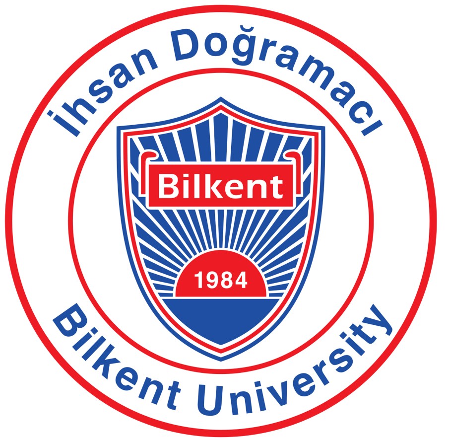

About Me
I'm a MSc computer engineering student with interests in AI, machine learning, and software (game) development. I enjoy building tools and solving real-world problems using code.
My research focuses on machine learning , deep learning, computer vision, and Natural Language Processing (NLP). I have also explored the area of neural processes that combines deep learning with Bayesian methods.
Education

Bilkent University
Master's degree, Computer Engineering
Jan 2025 - Jan 2028
Grade: 3.73 / 4.00
University of Isfahan
Bachelor's degree, Computer Engineering
Sep 2020 - Sep 2024
Grade: 19.01 / 20.00 (Rank: 2/120)
National Organization for Development of Exceptional Talents (Sampad)
High School Diploma, Mathematics and Computer Science
Oct 2017 - May 2020
Grade: 19.39 / 20.00
Activities: Programming, Sports, Piano, Computer Olympiad, etc.
Publications
Enhancing Mutation Testing Through Grammar Fuzzing and Parse Tree-Driven Mutation Generation
Conference Paper2024 15th International Conference on Information and Knowledge Technology (IKT), IEEE · Dec 2024
Introduces a mutation testing technique that combines parse-tree analysis with grammar fuzzing to generate syntactically valid, targeted mutations, helping produce mutants that compile and run correctly while posing more meaningful challenges to test suites.
Large Language Models for Game Development: A Mapping Study on Automated Code Generation
Workshop PaperJoint Proceedings of the STAF 2025 Workshops (LLM4SE), Koblenz, Germany · Jun 2025
A systematic mapping study of 15 primary studies on applying large language models to automate code generation in game development, surveying the models and prompting strategies in use and outlining key benefits, limitations, and future research directions.
Deep Large-Margin ℓp-SVDD with CNN Feature Learning for Novelty Detection
Conference PaperICASSP 2026 – IEEE International Conference on Acoustics, Speech and Signal Processing · May 2026
Extends the large-margin ℓp-norm SVDD novelty detection method by jointly learning deep convolutional features alongside the classifier boundary, using an alternating Frank–Wolfe optimization scheme that improves over fixed-feature approaches on standard novelty detection benchmarks.
Skills
AI & Machine Learning
Frameworks & Libraries
Programming Languages
Tools & Platforms
Projects
DeepFake Detection
Comparative study using XceptionNet and CLRNet.
Parallel Conjugate Gradient
MPI implementation for large-scale matrix systems.
Neural Processes for Classification
Investigated IMNP for classifying Alzheimer's disease progression on the TADPOLE dataset.
Game Development
Developed 2D and 3D games using Unity (C#) and Godot (GDScript).